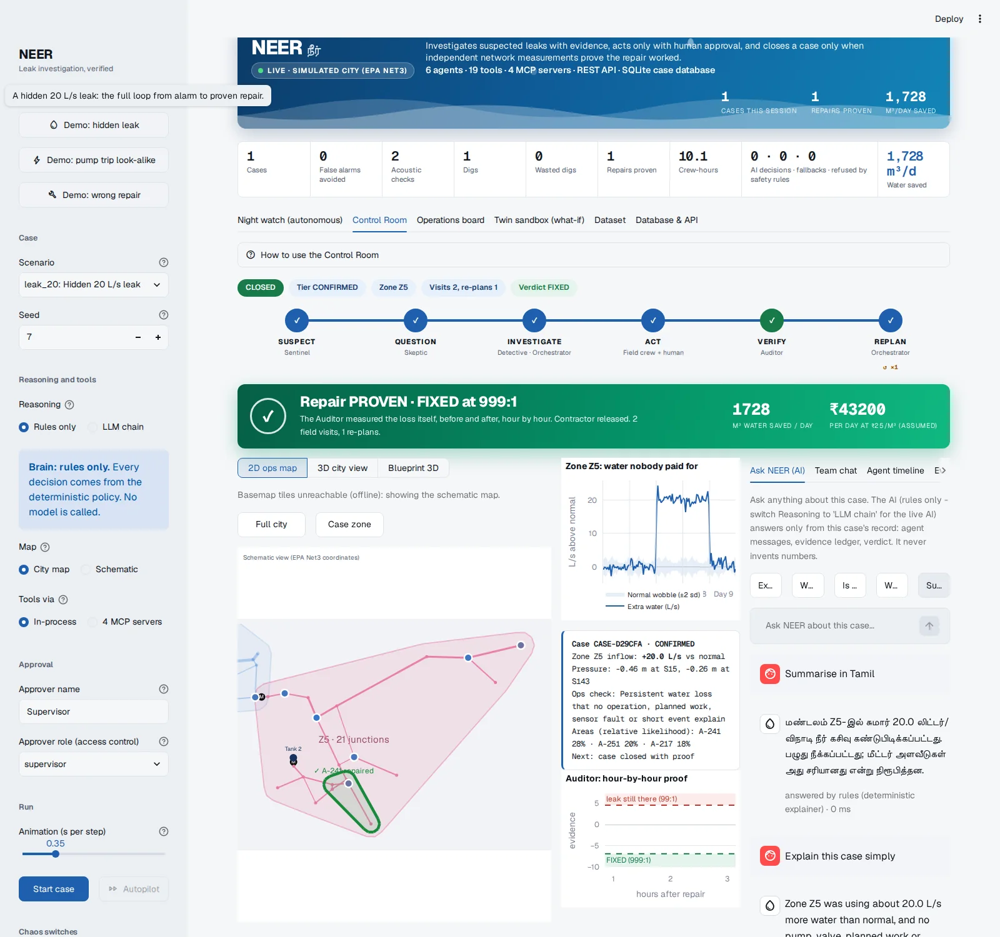
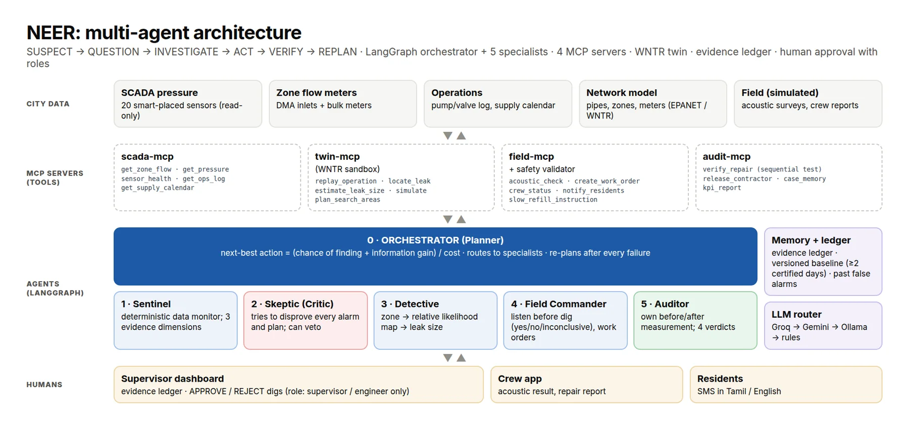

NEER
Six AI agents investigate a suspected water leak, choose the next safest action with a human's approval, and refuse to close the case until independent network measurements prove the repair actually worked.
Leak alarms send crews to dig in the wrong places
Water utilities lose a large share of treated water before it reaches a tap. When a meter suggests a leak, the usual response is a simple threshold alarm: someone is sent out, digs where they think it is, and the contractor reports the job as fixed. Nobody independently checks whether the water loss actually stopped.
So the hard part isn't spotting that something is wrong. It's deciding what it is, where it is, what to do next with limited crews, and proving the repair worked.
NEER doesn't close a case on the crew's word. It closes it on the data.
A team of six agents running one closed loop
The loop is SUSPECT → QUESTION → INVESTIGATE → ACT → VERIFY → REPLAN. Each agent has one job and one hard limit.
- SentinelWatches every zone's flow and pressure. No AI, cannot dispatch
- SkepticTries to explain every alarm away: pump actions, planned work, a faulty sensor. Cannot approve its own plan
- DetectiveNarrows the leak to an area with its size and uncertainty. Numbers only from tools
- OrchestratorPicks the next best action by value per cost and re-plans after every failure
- Field CommanderListens before any dig and sends work orders and Tamil/English SMS. Needs a named approver
- AuditorIndependently measures the loss before and after repair, and holds the contractor until it's proven

Safety and self-correction live in code, not in the prompt
- The AI plans, the code decides what's physically true. Physics and maths live in tested engine code. The language model chooses from an allowed set of actions and explains them, and it never produces a number a tool didn't return.
- Safety gates inside the tools themselves. A dig needs an acoustic "yes", a named approver with the supervisor or engineer role, and only one open dig per case. Sensor data is read-only.
- 19 tools across 4 MCP servers (SCADA, digital twin, field and audit), with timeouts, retries, a circuit breaker and a direct-call fallback if the MCP transport fails.
- Three self-correction loops: at the tool level, at the reasoning level (the Skeptic's review), and in reality (an acoustic "no" or a failed repair triggers a re-plan).
- Never blocked by the network. The model chain falls back from Groq to Gemini to a local model to plain rules, so the demo runs with no API keys at all.

Does the agent team actually matter?
An ablation study ran the same 72 cases (36 real leaks, 36 look-alikes) through five systems, from a plain threshold alarm to full NEER:
| System | Crews sent for look-alikes | Leaks really fixed | Tickets closed while still leaking |
|---|---|---|---|
| Threshold alarm | 56% | 42% | 52% |
| Leak model only | 56% | 56% | 35% |
| + Skeptic | 6% | 56% | 35% |
| + Orchestrator | 56% | 58% | 25% |
| Full NEER | 6% | 78% | 0% |
Separately, the full evaluation suite (16 scenarios on five random seeds never used for tuning) passed 79 of 80 runs: no case closed while a leak was still running, no physical action without a valid approver, all 20 chaos runs recovered, and all 5 deliberately wrong repairs were caught. The one failure, a second leak that wasn't found, was escalated to a human.
To be precise about what was measured: that evaluation ran on the deterministic rules path that backs every AI decision. A run with live language models also scored 79 of 80, but free-tier quota limits meant most of its decisions fell back to the same rules, so it mainly shows the fallback works.
Honest limits
- It runs on a simulated city (the EPA Net3 benchmark network), not live utility data.
- It narrows a leak to an area of about a kilometre of pipe, not a GPS point. The acoustic check pinpoints it within that area.
- Very small leaks can take several days to show, and NEER waits for more data rather than guessing.
- Area scores are relative likelihoods, not calibrated probabilities.
My role, and how the AI tools were used
I build with AI development tools and I'm open about it. My part is the work the tools can't do alone: choosing the problem, writing the specification and the rules every change must respect, splitting the build into small tested phases, and checking each result against the project's own output.
For NEER, the key decision was where the AI is allowed to act. It plans and explains; physics, numbers and safety live in tested code that can veto it. Every random process takes a seed, so any demo replays identically, and the Auditor is kept independent: it never reads the crew's report.
Every number on this page can be traced to a file in the repository (docs/EVAL.md, docs/ABLATION.md and docs/ENGINE_REPORT.txt).